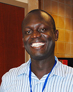
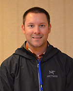
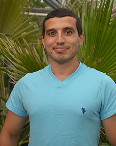
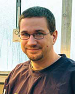

Find us on Twitter
Find us on TwitterField Research Team
The field research team developed standardized methods and performed baseline monitoring of carbon, nitrogen and water footprints at agricultural sites across the Midwest. They are currently collecting an expanse of field research data centered around current and novel management practices, including the use of cover crops, no-till, integrated pest management, canopy nitrogen sensors and drainage water management. These practices have the potential to increase the resiliency of corn-based cropping systems to a changing climate, while also reducing a system's carbon, nitrogen and water footprints.
Learn more about Field Research Team activities HERE.
Jump to specific team members...
| Field Trials: | Integrated Pest Management (IPM): |
Lal
 |
Rattan Lal, Principal Investigator Baseline Monitoring & Experimental Trials (Lead) Faculty Website The Ohio State University Professor, School of Environment & Natural Resources |
|  | Vincent Obade Post Doctoral Researcher School of Environment & Natural Resources The Ohio State University |
|
|
|
|
Kladivko
| Not Pictured: | Eileen J. Kladivko, Principal Investigator Objective. 1 & 2 (Lead) Purdue University Faculty Website Professor-Agronomy |
||
| Not Pictured: | Trevor Frank MS Graduate Student |
||
Helmers
 |
Matthew J. Helmers (Matt) Principal Investigator; Obj. 1 & 2 (Lead) Iowa State University Faculty Website Associate Professor (Ext. Ag Eng.) - Ag & Biosystems Engineering |
||
| Ainis Lagzdins Post Doctoral Researcher |
|||
|
|
|
|
|
|
Lauer
 |
Joseph G. Lauer (Joe) Principal Investigator; Obj. 1 & 2 (Lead) University of Wisconsin Faculty Website Professor - Agronomy |
||
 |
Thierno Diallo Research Staff Research Specialist |
 |
Maciek Kazula Graduate Student PhD Graduate Student - Agronomy |
Scharf
 |
Peter Scharf Principal Investigator; Obj. 1 & 2 (Lead) University of Missouri Faculty Website Professor (Ext. Soil Fertility) - Plant Sciences |
|
|
|
Bowling
 |
Laura Bowling Principal Investigator; Obj. 1 & 2; Obj. 3 Purdue University Faculty Website Associate Professor - Agronomy |
|
||||||||||||||||||||||||||||||||||||||||||||||||||||||||||||||||||||||||||||||||||||||||||||||||||||||||||||||||||||||||||||||||||||||||||||||||||||||||||||
Castellano
 |
Michael Castellano (Mike) Principal Investigator; Obj. 1 & 2; Obj. 3 Iowa State University Faculty Website Assistant Professor - Agronomy |
||
 |
Javed Iqbal Research Staff Post Doctoral Researcher & Greenhouse Gas Measurement Coordinator |
||
|
Cruse
 |
Richard M. Cruse (Rick) Principal Investigator; Obj. 1 & 2; Iowa State University Faculty Website Professor - Agronomy Director - Iowa Water Center |
|
Dick
 |
Warren A. Dick Principal Investigator; Obj. 1 & 2 The Ohio State University Faculty Website Professor - Environment & Natural Resources |
|
|
|
|
Fausey
 |
Norman R. Fausey (Norm) Principal Investigator; Obj. 1 & 2 Ohio ARS - Columbus Faculty Website Research Leader & Supervisory Soil Scientist |
||
| Emma Snyder PhD Graduate Student |
|||
|
|
Frankenberger
 |
Jane Frankenberger Principal Investigator; Obj. 1 & 2 Purdue University Faculty Website Professor - Ag & Biological Engineering |
| Not Pictured: | Guy Bou Lahdou |
| MS Graduate Student |
Guber
 |
Andrey Guber Principal Investigator; IPM Michigan State University Faculty Website Assistant Professor - Plant, Soil and Microbial Sciences |
| Not Pictured: | Jessica Fry |
| MS Graduate Student |
Kravchenko
 |
Alexandra Kravchenko (Sasha) Principal Investigator; Obj. 1 & 2 Michigan State University Faculty Website Professor - Crop & Soil Sciences |
||
 |
Mel Erickson Research Staff |
 |
Wakene Negassa Chewaka Research Staff Post Doctoral Researcher |
|  | Richard Price Research Staff |
||
|
|
| Not Pictured: | Ehsan Toosi |
| Post Doctoral Researcher |
Nafziger
 |
Emerson D. Nafziger Principal Investigator; Obj. 1 & 2 University of Illinois Faculty Website Professor - Crop Sciences |
 |
Stacy Zuber PhD Graduate Student (Crop Physiology / Production) |
Nkongolo
 |
Nsalambi Nkongolo Principal Investigator; Obj. 1 & 2; Obj. 5; Obj. 6 Lincoln University Faculty Website Associate Prof. & GIS Lab Mgr. - Agriculture & Environment |
||
 |
Dinesh Panday MS Graduate Student |
 | Hasan Ali MS Graduate Student |
 |
Samuel Haruna PhD Graduate Student (Soils) | ||
|
|
|
|
 |
John E. Sawyer Principal Investigator; Obj. 1 & 2 Iowa State University Faculty Website Professor (Ext. Soil Fertility) - Agronomy |
||
 |
Dan Barker Research Staff Assistant Scientist |
|
|
| Not Pictured: | Swetabh Patel |
| MS Graduate Student |
Strock
 |
Jeffrey S. Strock (Jeff) Principal Investigator; Obj. 1 & 2 University of Minnesota Faculty Website Associate Professor - Dept of Soil, Water, & Climate |
||
 |
Mark Coulter Research Staff Assistant Scientist |
|
|
| Not Pictured: | Brent Dalzell Research Staff Research Associate |
|
|
| Not Pictured: | Lu Zhang PhD Graduate Student |
|
|
| Not Pictured: | Maria B. Villamil Principal Investigator; Obj. 1 & 2 University of Illinois Faculty Website Assistant Professor - Crop Sciences |
| Not Pictured: | Gevan Behnke Lab & Field Manager |
Integrated Pest Management (IPM)
Bradley
| Not Pictured: | Kevin Bradley |
| Principal Investigator; IPM | |
| University of Missouri | |
| Faculty Website | |
| Associate Professor - Plant Sciences |
Chilvers
| Not Pictured: | Martin I. Chilvers (Marty) |
| Principal Investigator; IPM | |
| Michigan State University | |
| Faculty Website | |
| Visiting Assistant Professor - Plant Pathology |
Davis
| Not Pictured: | Vince Davis |
| Principal Investigator; IPM | |
| University of Wisconsin | |
| Faculty Website | |
| Assistant Professor - Agronomy |
| Not Pictured: | Rebecca Redline |
| MS Graduate Student |
Eastburn
| Not Pictured: | Darin M. Eastburn |
| Principal Investigator; IPM | |
| University of Illinois | |
| Faculty Website | |
| Associate Professor - Plant Pathology |
Gardiner
 |
Mary Gardiner Principal Investigator; IPM The Ohio State University Faculty Website Assistant Professor - Entomology |
Gassmann
 |
Aaron J. Gassmann Principal Investigator; Obj. 1 & 2; IPM Iowa State University Faculty Website Assistant Professor - Entomology |
 |
Michael Dunbar (Mike) |
Leandro
| Not Pictured: | Leonor F.S. Leandro |
| Principal Investigator; IPM | |
| Iowa State University | |
| Faculty Website | |
| Assistant Professor - Plant Pathology & Microbiology |
| Not Pictured: | Gang Han |
| MS Graduate Student |
Michel
| Not Pictured: | Andrew P. Michel (Andy) |
| Principal Investigator; IPM | |
| The Ohio State University | |
| Faculty Website | |
| Assistant Professor - Entomology |
Mueller
|  | Daren S. Mueller |
|
|
| Not Pictured: | Ed Zaworski |
| MS Graduate Student |
O'Neal
| Not Pictured: | Matthew O'Neal (Matt) |
| Principal Investigator; Obj. 1 & 2; Obj. 3, IPM | |
| Iowa State University | |
| Faculty Website | |
| Associate Professor - Entomology |
Robertson
| Not Pictured: | Alison Robertson |
| Principal Investigator; IPM | |
| Iowa State University | |
| Faculty Website | |
| Associate Professor - Plant Pathology & Microbiology |
Tylka
| Not Pictured: | Gregory L. Tylka (Greg) |
| Principal Investigator; IPM | |
| Iowa State University | |
| Faculty Website | |
| Professor - Plant Pathology & Microbiology |
| Not Pictured: | Ed Zaworski |
| MS Graduate Student |
Wise
| Not Pictured: | Kiersten Wise |
| Principal Investigator; IPM | |
| Purdue University | |
| Faculty Website | |
| Assistant Professor - Botany & Plant Pathology |
We're scientists and farmers working together to create a suite of practices for corn-based systems that:
- are resilient in times of drought
- reduce soil and nutrient losses under saturated soil conditions
- reduce farm field nitrogen losses
- retain carbon in the soil
- ensure crop and soil productivity
Sustainable Corn BLOG
Farmers and scientists in the Corn Belt discussing cover crops, weather, tillage, drainage water managment and much more. .
Sustainable Corn YouTube Channel
USDA-NIFA Award No.: 2011-68002-30190